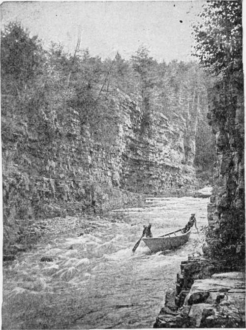

Surf-Fishing For Red Bass
Description
This section is from the book "American Game Fishes", by W. A. Perry. Also available from Amazon: American Game Fishes: Their Habits, Habitat, and Peculiarities; How, When, and Where to Angle for Them.
Surf-Fishing For Red Bass
"Off where the slender light-house lifts Like sheeted ghost, above the surge, Casting its warning flames at night Far to the dim horizon's verge; There anchored, when the tides are low, And first the young flood bubbling flows, The fisher far the spinning line Deep down with trustful ardor throws."
-McLellan, "Poems of Rod and Gun."
February twenty-fifth, the weather being warm, and the tide serving this morning, we went down the river for a few hours fishing in the surf. Leaving our boat where the high bank joined the beach, we crossed a wide expanse of sand, bounded on the north by dunes fifteen or twenty feet high, on the south by the Inlet, and on the east by the ocean beach, level, solid, and about 100 yards wide at low water. Above this gently-sloping beach the sandy flat was nearly a quarter of a mile wide, scattered with sea shells of various kinds, cast up by the waves-clams, mussels, conchs, scallops, with egg. cases of Sharks, and other sea-fruit; a fleet of the Portuguese man of war, Physalia, stranded on the beach and drying in the sun. Here and there, the burrow of a sand crab, its owner peeping out; vestiges of wrecks, in the shape of water-worn spars and broken planks; sea-beans which have floated from West India shores, and occasionally the delicate shell of the paper nautilus, or Argonaut-usually more or less damaged. One of these shells was once found here containing its living inhabitant, which is very rare, as the creature is not attached to the shell, but uses it as a sort of nest, for incubating the eggs, as we learn from late observers. Closet naturalists declare that the old account, given by poets and others, as to the sailing habits of the nautilus, is a fable, but the present writer, having repeatedly seen, on the calm surface of tropical seas this navigation in progress, believes they were correct, and man might "Learn of the little nautilus to sail."
We put up many sea birds from their nests, slight depressions in the sand, the eggs so concealed by their color as to be almost invisible. There were gulls, terns, shearwaters, petrels, and the like. In front was the ocean deeply and beautifully blue, with a line of breakers outside the long narrow slough or gully which lay just outside low water-mark. It was in this slough that we were to fish, and our guide looked carefully along for the Bass. Presently he said he could see them, and wading in till the water reached his waist he swung the baited hook and the lead around his head, and cast it away into the surf. The major followed with a hand-line, and I having also waded into the slough cast from the reel as far as possible-the water I found to be pleasantly warm; the sun was hot and the wind southerly. It was young flood, and the tide rolled the baited line ashore, making frequent casts necessary. Our guide, whose casts were longer than ours, got the first Bass-a six-pounder--then another before we either of us had a strike. "We must make longer casts, major; as far as the line of surf." This being done, both of us soon had a fish hooked and in full play. I found that the Bass here in open water make a longer and fiercer struggle than those in the river, but assisted by the incoming waves, we were able to handle them. There was quite a large school in the slough, and we got seven of them, from four to six pounds in weight.
"There," said P., "I think we have as many as we want to tote across the beach."
I was playing a good Bass at the time, and had got it nearly to the shore, when a six-foot Shark followed and seized it. I pulled and the Shark pulled, thus bringing itself further in, when a big wave caught it, and rolled it ashore almost high and dry. P. and the major each seized a club from the driftwood and beat the Shark over the head; in spite of its furious struggles and vicious blows with the tail, they killed it- but my Bass was cut in two.
A few hundred yards from where we were fishing was the wreck of a steamer half-buried in the sand at low watermark, the stump of a mast and part of her smoke-stack above the waves. To the wreck we went, and climbed on board. Her hold was full of water, washing in and out, and we could see large fish swimming about inside.
Judge: "This looks like an old wreck; when did she come ashore?"
P.: "I think it was just after the surrender. She brought down a load of nigger soldiers to settle at the Inlet. They built some houses and a steam saw-mill, about a mile above my house."
Judge: "The same old mill that we see there now in ruins?"
P. "Yes; the boiler bursted and killed two or three of the people, and the colony soon broke up, after the Yankee colonel that brought them here went away. Come, major, we had better shoulder our fish, and start for the boat."
Au Sable Chasm. Running The Rapids.
By S. C. Clarke.
Continue to: